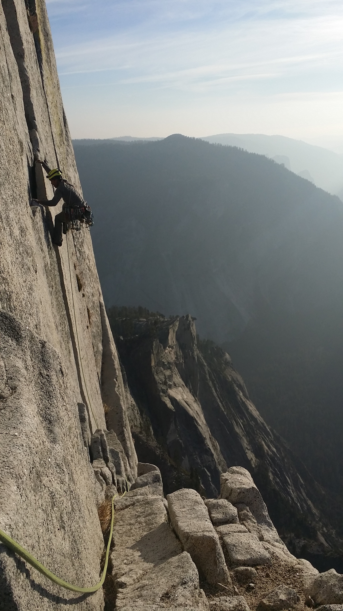
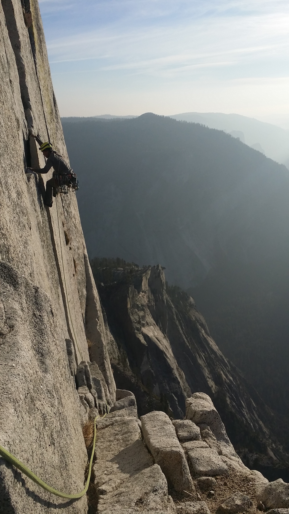

Welcome to Zach's First Website!
Here I wish to share my current list of projects and goals as well as a little about me. I hope you enjoy!
 

Python
I am currently working on problem 21 in project Euler. I learned a cool method Euler used to find amicable numbers. Here is a link to a lecture on Euler's method for finding amicable numbers. Apparently he was a very smart dude.
I'm also working on finishing "Think Python," a book I found online by Allen Downey, Jeffrey Elkner, and Chris Meyers.
HTML
I started learning HTML in April 2019. This website represents what I have learned so far. I'll keep updating as I go.Preparing for Fall '19
My course load this fall is: Network Analysis, Engineering Economics, Applied Electromagnetics, Intro to Logic Design, and Signals & Systems. First I'll need to brush up on some math!
Rock Climbing
This has been my main athletic pursuit since 2015. I keep climbing because it balances physical and mental challenges, gets me outside, and comes with a cool network of people who share similar interests. Seriously! Everyone I've met who climbs is pretty cool, both new people and veterans!
This year (2019) I started training early in the season hoping to hop on the infamous Yosemite climb, astroman. I've been focusing on getting good at crack climbing, which is a difficult style to learn. Early in the year, however, I injured my knee while skiing, so I've had to lower my intensity.